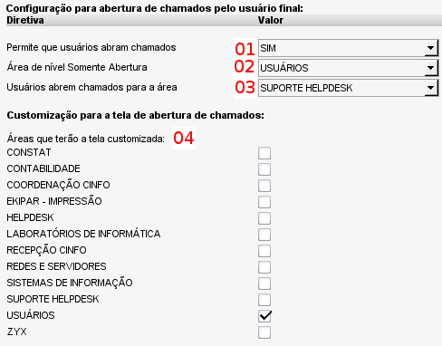
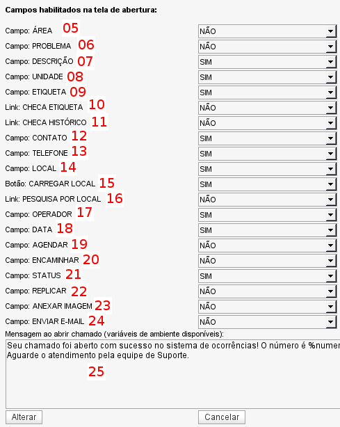

Configuração para abertura de chamados (Admin -> Configurações -> Abertura de chamados)


Tela de configuração de opções para abertura de chamados - versão 2.0rc3
ATENÇÃO:
A partir da versão
2.0RC4, onde é possível criar diversos
perfis de telas de abertura, esta tela foi simplicada permancendo apenas com as opções
01, 02 e 25. As demais opções de customização dos campos da tela de abertura são acessadas através do menu Admin -> Configurações ->
Perfis de tela de abertura.
01 - Opção para definir se é permitida a abertura de chamados pelo usuário final. Caso essa opção esteja habilitada, qualquer usuário-final poderá se auto-cadastrar no sistema para abertura de chamados.
02 - Opção para selecionar, dentre as áreas possíveis, qual será a área associada aos usuários de nível "
somente abertura". Somente é possível selecionar uma área dentre as que foram criadas sem a opção "
Atende chamados".
03 - Opção para selecionar a área que será atribuída aos chamados abertos pelo usuário final. Quando um usuário final abrir um chamado diretamente no sistema, este será direcionado para a fila de atendimento da área que for definida nessa opção.
04 - O OcoMon permite customizar a tela de abertura de chamados para uma ou mais áreas de atendimento. No entanto, não é possível realizar diferentes customizações em função das áreas. Isso significa que a customização definida (ver item
05) será a mesma para todas as áreas selecionadas aqui.
Dica: é interessante utilizar a customização para a tela de abertura de chamados para usuários finais, omitindo campos de natureza mais técnica e agilizando a abertura de chamados diretamente no sistema por esses usuários. Nesse caso, basta marcar apenas a área de nível somente abertura.
As opções do item
05 ao item
24 dizem respeito à customização da tela de abertura de chamados para a(s) áreas definida(s) no item 04. Nessa área é possível definir quais campos aparecerão na tela de abertura de chamados, bastando marcá-los com a opção SIM ou NÃO.
Para saber o significado de cada campo, acesse a página sobre as informações de
abertura de chamados.
25 - Mensagem customizada para chamados abertos pelo usuário final. Essa mensagem será exibida ao usuário logo após o mesmo concluir a abertura de chamado diretamente no sistema. É possível utilizar variáveis de ambiente para customizar a mensagem. Para conhecer as variáveis de ambiente possíveis acesse a página de
configuração de mensagens para e-mail.